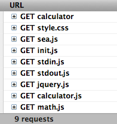
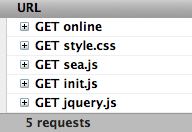

Let's see an example for illustration.
This is a simple calculator: calculator demo, including the following files:
index.html -- html page style.css -- style init.js -- entrance script calculator.js -- main script stdin.js -- input stdout.js -- output math.js -- math lib
Here is the source code: calculator@github.
In the index.html, we use script tag to
bootstrap.
<script src="path/to/sea.js" data-main="path/to/init"></script>
Then all dependent scripts will be loaded automatically.

This is very comfortable in the development phase, but obviously, the number of files will increase quickly in large applications. If we put these files to production environment directly, the page performance will be hurt badly due to too much HTTP requests. This is really depressed!
How to enjoy the convenience of development, while keep the performance excellent?
Through optimization in the deployment phase, we can achieve a happy win-win solution. Back to out lovely calculator project, let's see how to do.
First, let's install spm tool: spm
Then do the following commands:
$ cd path/to/demo/calculator $ spm build init.js --combine Building init.js ... process init.js ... process stdin.js ... process calculator.js ... process stdout.js ... process math.js Combined to __build/init.js
We get the compressed and combined version of
init.js:
$ cat __build/init.js
seajs.config({alias: {"jquery":"jquery/1.6.2/jquery"}});define("./init"...
define("./stdin",["jquery","./calculator"],function(a,b){...
define("./calculator",["./stdout","./math"],function(a,b){...
define("./stdout",["jquery"],function(a,b){...
define("./math",[],function(a,b){..
Finally, push files to online environment:
$ publish Successfully push local/calculator/__build/*.js to online/calculator/*.js
So, we get the online version: online calculator.
Let's see the HTTP requests:

Except the sea.js and jquery.js, all other scripts
are combined to one file init.js. It's good for page
performance.
We can even use the --combine_all option to combine all
dependent modules to one file:
$ cd path/to/demo/calculator $ spm build init.js --combine_all Building init.js ... process init.js ... process stdin.js ... process ../../../../spm/modules/jquery/1.6.4/jquery.js ... process calculator.js ... process stdout.js ... process math.js Combined to __build/init.js
In this way, __build/init.js will also include
jquery.js, and HTTP requests of scripts will reduce to only
one.
Let's see the standalone version: standalone calculator.
NOTICE: Less HTTP requests DOES NOT necessarily guarantee better performance. The browser cache should also be considered. It's advise to adopt suitable packaging strategy according to practical situation in your projects.
For more information, please see spm project.